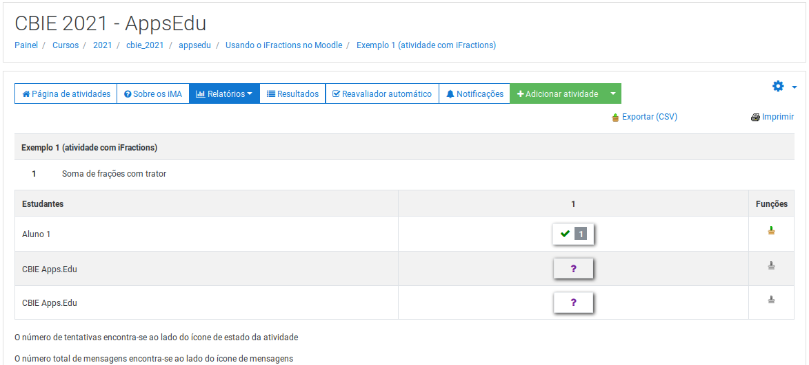
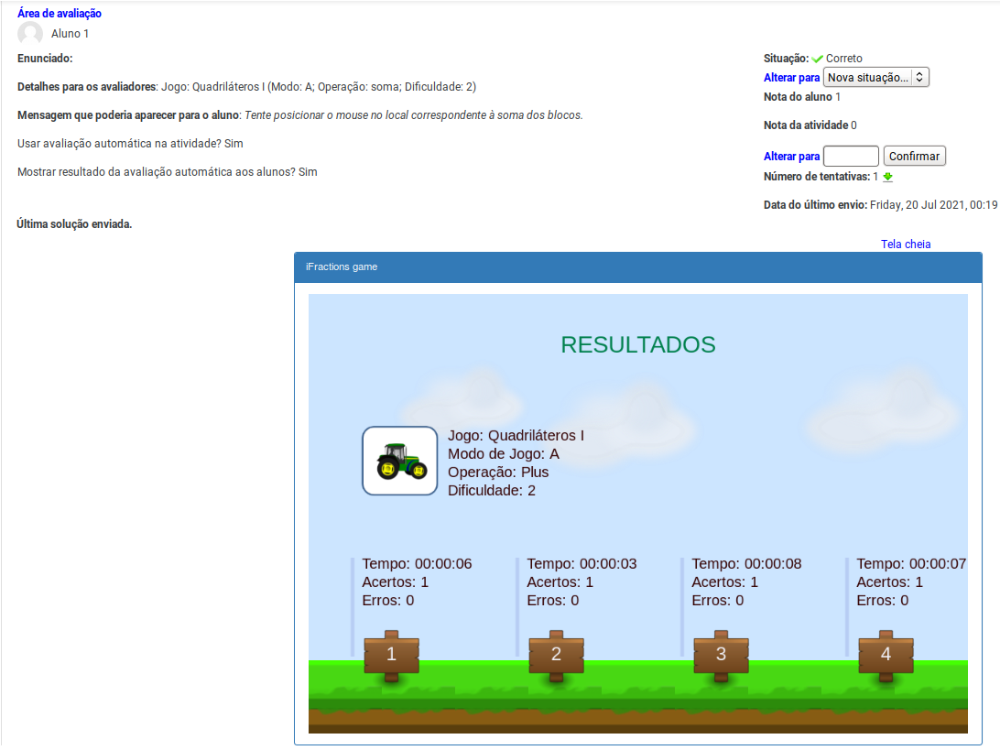

Examinando atividades dos alunos
Se você é um professor, siga o seguinte tutorial para analisar as atividades do iFractions enviadas pelo seus alunos no Moodle.
1. Para examinar uma atividade deve-se entrar na página da atividade (estando no papel professor);
2. Na página do iTarefa (da atividade), clicar no botão "Relatórios" (segundo botão) e depois na opção "Página inicial";
3. Receberá uma página com uma tabela. Na coluna "Estudantes" estão os nomes dos alunos matriculados e na coluna "1" os resultados dos alunos para atividade 1 (e assim por diante se houver mais atividades);

4. Para examinar uma atividade específica de um aluno, clicar na entrada correspondente à linha do aluno e coluna da atividade. A página retornada é como na figura abaixo.
